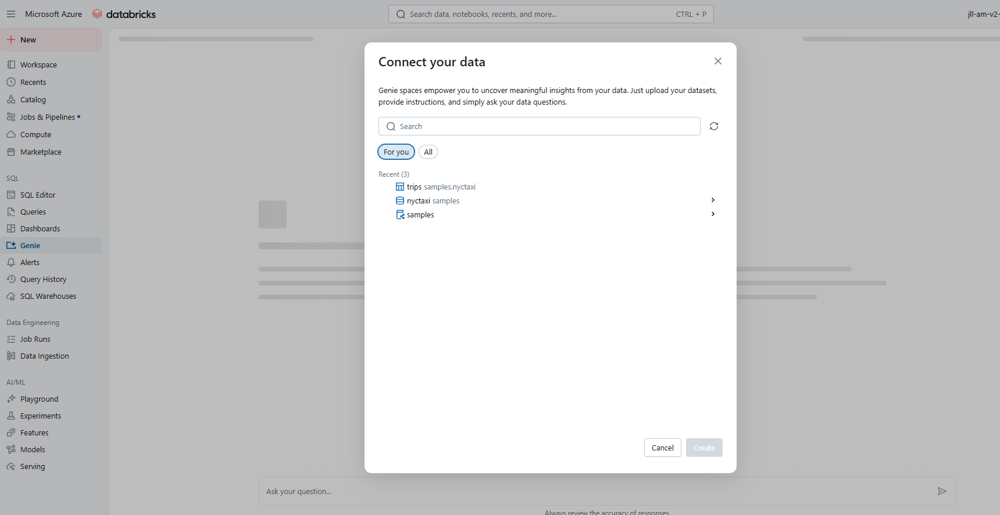
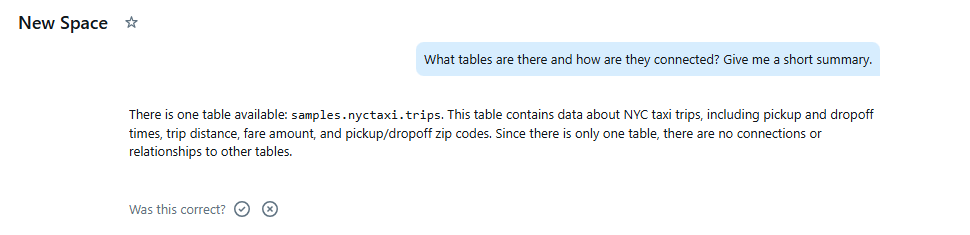
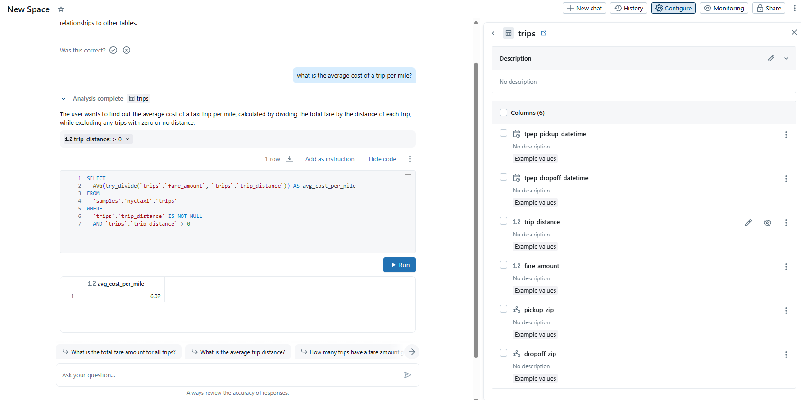
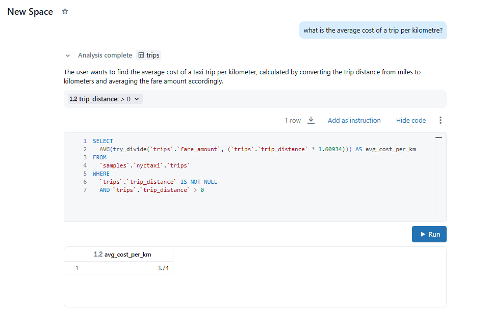
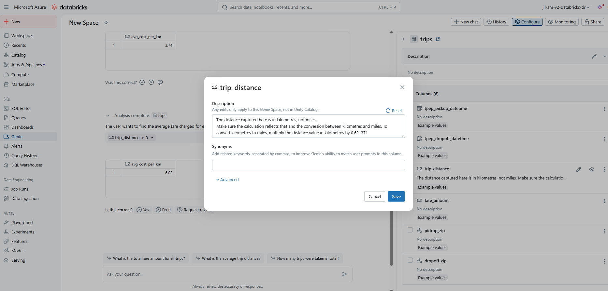
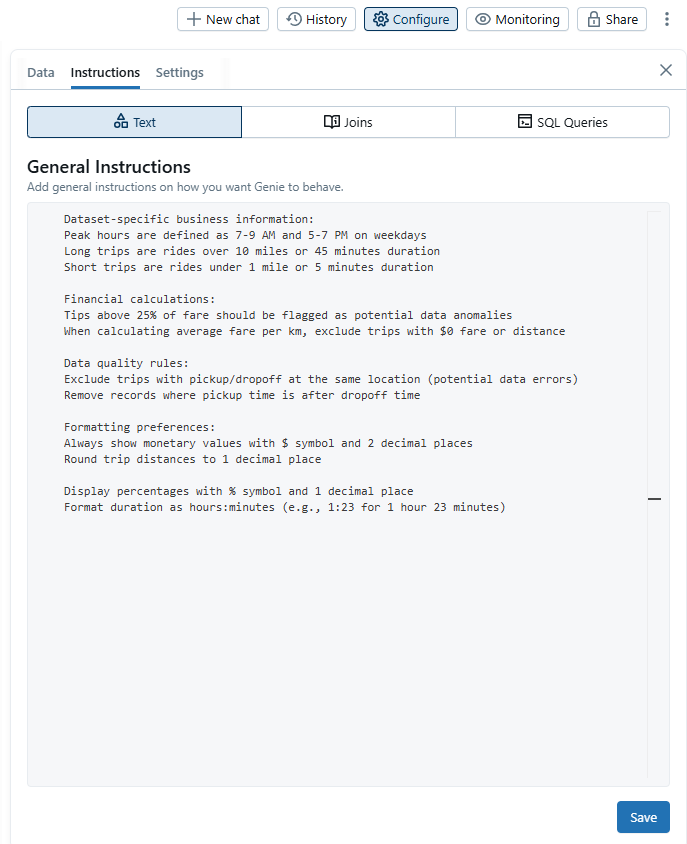
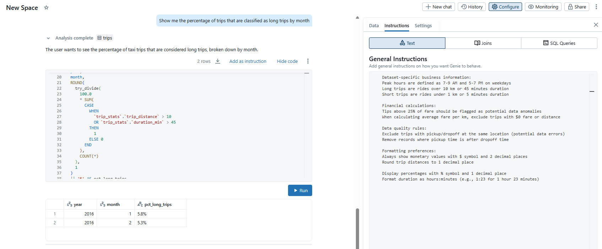
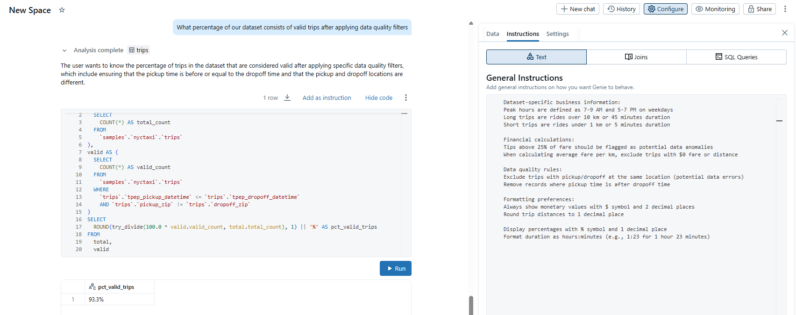

Hi all,
We recently migrated at work to databricks and moved away from transformation tools like Alteryx. Part of that learning journey is knowing what parts of databricks we can best utilise. The team have done fantastic work understanding everything from the unity catalog, through to data ingestion and runs, compute and notebook best practice, but of course databricks genie is the 'glam' bit.
Today will be a short walk through an existing dataset on databricks genie.

First of all looking at connecting some example data.
& we can ask it a generic first question. You have the option to add multiple data sources in here.
We can then ask it something that's probably not that hard a question, but i don't give it any context as to whether the trip_distance is a mile or km metrics. Lets see what it comes out with when asked the average cost of a trip per mile.

The good things is we can ask it to display the code. Taking the average fare amount, and average distance, then dividing them for all values above zero or not null.

Here is that in kilometres.
I could then tell Genie that my original data is in kilometres not miles, and if I re-ask it, it would give me that initial 6.02 value we had previously.

Only a small change but important context for the calculation.
Next I want to give some general instructions a go. Let's see if this helps.

& we can see that in action when we ask genie to show me the percentage of trips that are classified as long trips.

We could also ask it a question around our data quality. (Yes i'm aware someone can be picked up and dropped off at the same location)

Giving feedback
Each response prompts the user to answer Is this correct?. Users can respond in one of the following ways:
Yes: Confirms the response appears accurate.
Fix it: Flags the response as incorrect. Users can select from common issues or enter their own explanation. They can then:
Click Submit and try again to regenerate the response using the provided feedback.
Click Submit to send the feedback without regenerating the response.
Request review: Flags the response for manual review. Users can add an optional comment to give you additional context.
As an editor, you can view feedback and flagged responses in the Genie interface.
Overall, I like where genie is headed. I was a little nervous to start with how it would write the code calculations, but the more information you give it, the more complexities you break down and the response feedback you feed it - the better the outcomes.
At the moment this probably helps a bunch with our teams quality assurance, quick analysis - less so stakeholder facing and intuitive for non data folk.
Probably goes to show the importance of semantic layers in an AI-BI built products and the detailed context needed for good quality reporting.
You can read more about the set up here.This video from Databricks is pretty useful from 17 mins in.
LOGGING OFF,
CJ